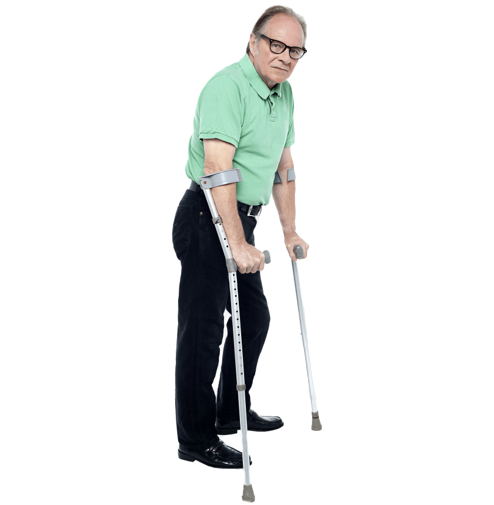

Sobre nós
Serviços

Contamos com um serviço de emprestimo de cadeiras de rodas e muletas para aqueles que precisam porém não possuem condições financeiras de arcar com os custos de um aluguel ou compra dos mesmos. Nosso objetivo é ajudar as pessoas a terem uma qualidade de vida melhor por meio do uso desses equipamentos.
Contamos com um serviço de emprestimo de cadeiras de rodas e muletas para aqueles que precisam porém não possuem condições financeiras de arcar com os custos de um aluguel ou compra dos mesmos. Nosso objetivo é ajudar as pessoas a terem uma qualidade de vida melhor por meio do uso desses equipamentos.